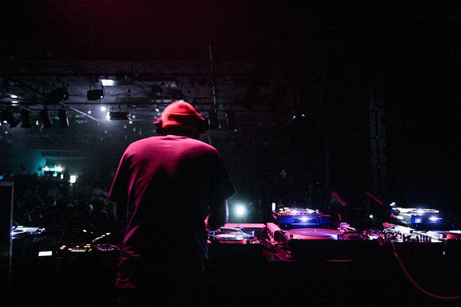

DJ DUCT (THINKREC.)

- 日本語
- English
- Profile
- サンプラーやエフェクターを効果的に使い、超絶なスクラッチを駆使しながらも、たった一台のターンテーブルでプレイするという、その全くもってユニークなライブ・スタイルでトーキョー・アンダーグラウンドを席巻し、今や世界のアンダーグラウンド・シーンでも名を馳せる孤高の無頼派「DJ DUCT」。 閃きと経験によって矢継ぎ早に再構築される音像群、圧倒的なMIXセンスで構成される彼の「ワン・ターンテーブリスト」ライブは、聴くものだけでなく、観るものすべてを魅了する。自身の主宰するTHINKREC.(シンク・レック)よりバイナル中心に作品をリリース。現場主義を貫き、その現場感覚が生み出された「BACKYARD EDIT」シリーズは、海外からも大きな反響を呼んでいる。Hip Hop～Rare Groove Funkから、Detroit Techno～Deep Houseまでの音楽レンジを手に入れた彼には、ジャンルを超えた、これまで以上に縦横無尽な活躍を期待せずにはいられない。
- Profile
- DJ DUCT is known as an one-of-a-kind turntablist and a producer in Japan. He has been actively participating in Tokyo’s hip hop and break beats scene as a DJ since late 90s. It was the time when the term ‘turntablism’ was first introduced, and the art of spinning records progressed so dramatically in the hip hop world onto another level.As he witnessed such advancement, and immersed himself deeper and deeper into the art, he began to wonder if he could develop a completely new way of DJing using just one turntable, instead of two or more that all the other turntablists at the time were using. He wanted to be different, and he wanted to be good. DJ DUCT’s ‘less is more’ approach to turntablism have led him to establish his current unique style of performing. Using one turntable, a DJ mixer, a sampler, Kaoss-pads and other effectors, he collages and reconstructs the bits and pieces of sounds he captures from the records on the spot. It involves a lot of sampling, real-time editing, effect mixing and scratching all taking place on stage. Since all the sounds come from the records (and no preliminary recorded materials on the sampler), it’s definitely a live performance, and an extension of DJing more than anything else. He soon took his special skills to the studio, and proven himself to become an acclaimed beat maker in the country. He has released his first full length album Monkey’s Fist from his own imprint “THINKREC.” in 2005, and the second full length Bindweed from an independent record label “Libyus Music” in 2007, as well as numerous remixes and DJ mixes. He is experienced in working with MCs and other collaborators from both inside and outside of Japan including J-Live, Fat Jon (Five Deez) and Mike Ladd. In 2014, he is up and ready to introduce his music to the world !!!
- Website :
- djduct.com
- Booking :
- djduct@thinkrec.com
- DISCOGRAPHY
-
- “BACKYARD 45” [7”/ THINKREC./2016]
- “SOME LIKE THAT” [CD ALBUM/THINKREC. - UNDERGROUND GALLERY/2014]
- “BLUE SAUCE” [MIXCD/ SOULPOT RECORDS./2013]
- “STEPAK-TAKRAW - TUK TUK DRIVER (DJ DUCT EDIT)” [7”/ NNNF./2012]
- “ONE TURNTABLE LIVE MIX._Today : Tomorrow_BACKYARD EDIT PT.5” [MIXCD/ THINKREC./2011]
- “BACKYARD EDIT PT.4_Detroit Session” [12”/ THINKREC./2011]
- “BANQUET EP” [12”/ SONIMAGE LAB/2010]
- “9dw /rmx” [CD ALBUM/ catune/ene/2010]
- “SOFT VS DJ DUCT” [7”/ NNNF./2010]
- “BACKYARD EDIT PT.3” [12”/ THINKREC./2010]
- “BROKEN RESEARCH 2”Deviant / DJ DUCT [12”/ Motech/2010]
- “BACKYARD EDIT PT.2” [12”/ THINKREC./2010]
- “BACKYARD EDIT PT.1” [12”/ THINKREC./2009]
- “Deeper Remix EP1” - feat. O.N.O remix / DJ DUCT remix [12”/ Hitechfunk/2009]
- “The TBS Project” [V.A./ Mary Joy Recordings/2008]
- “BIND BREAKS” [12”/Face The Music/2007]
- “BINDWEED” [CD ALBUM/Libyus Music/2007]
- “INTRODUCTION TO DJ DUCT PT.TWO” [MIXCD/LESSON BREED RECORDS/2006]
- “underground broadcasting” [V.A./ FESN/2006]
- “AFRICAN JAG VOL.1” [V.A./ JAG LABEL/2006]
- “BIND E.P.” [12”/Libyus Music/2006]
- “embodied ? e.p.” [12”/THINKREC./2005]
- “ONE TURNTABLE LIVE MIX.” [MIXCD/THINKREC./2005]
- "Monkey’s Fist" [CD ALBUM/THINKREC./2005]